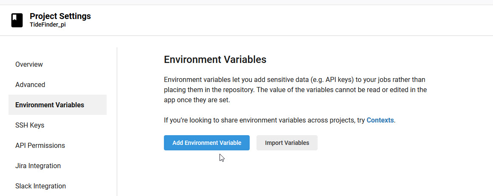
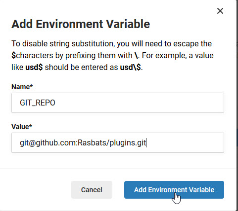
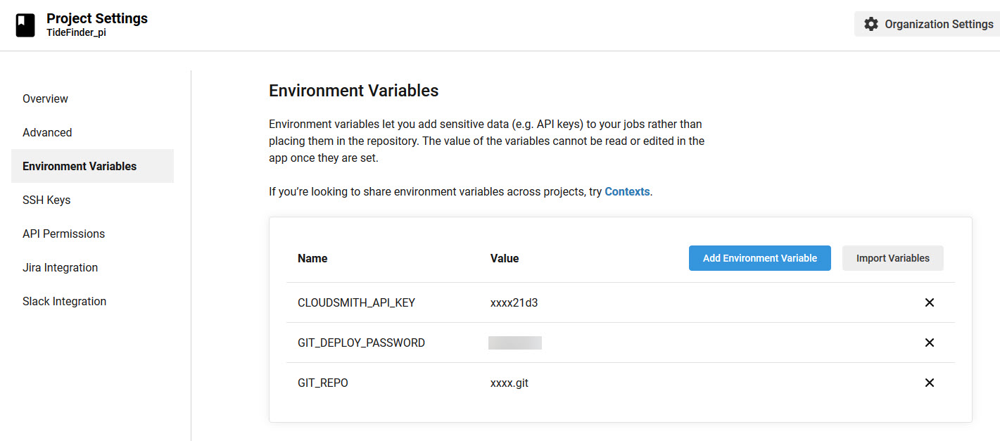
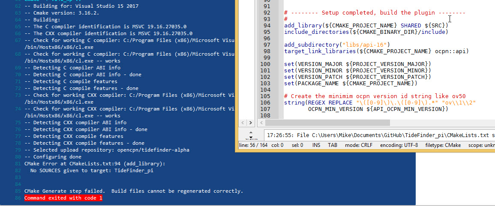
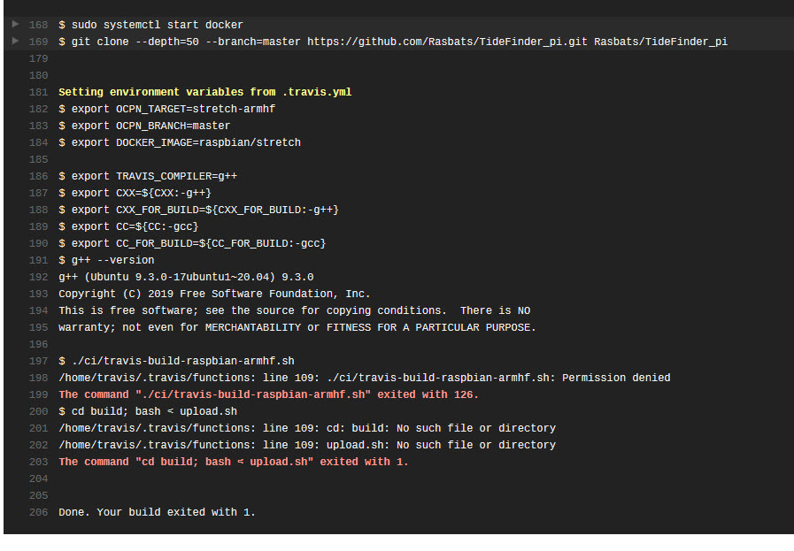
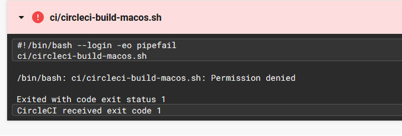

Cloud Service Changes
Now that the changes have been made to the plugin files and a backup made the GitHub TideFinder repo can be updated with the file changes.
GitHub
The alternative workflow simplifies the process of updating the plugin metadata files in OpenCPN/plugins. At the same time as installers for the TideFinder plugin are made the metadata file is copied to the auto branch of your fork of OpenCPN/plugins.
After the build the changes made in your plugins clone/auto branch can be pushed to the plugins clone/master branch ready for a pull request to OpenCPN/plugins.
CircleCI
Go to the project settings for TideFinder
Select Environment Variables

Add the Environment Variable for Cloudsmith - this is the CLOUDSMITH_API_KEY that was saved previously

Use the plugins clone SSH url and the password you used for making the keys to create further Environment Variables in the CircleCI TideFinder project.

The Environment Variables should be similar to this.

Appveyor
Set the environment variables
Experimenting with a new build
So far none of the pushes to the GitHub TideFinder repo have been tagged. We will continue like this as we test the build.
# ——– Options ———- set(OCPN_TEST_REPO opencpn/tidefinder-alpha CACHE STRING // Default repository for untagged builds) set(OCPN_BETA_REPO opencpn/tidefinder-beta CACHE STRING // Default repository for tagged builds matching `beta' ) set(OCPN_RELEASE_REPO opencpn/tidefinder-prod CACHE STRING // Default repository for tagged builds not matching beta )
Make a small non-important change to one of the files and push to the GitHub TideFinder repo.
Now check the Cloud services for errors
If any build fails the log for the builder is useful for fixing errors in the code and/or scripts.
Appveyor
The appveyor log shows that there is an error in CMakeLists.txt.
add_library(${CMAKE_PROJECT_NAME} SHARED ${SRC})
should read:
add_library(${CMAKE_PROJECT_NAME} SHARED ${SRC_TIDEFINDER})

Travis The scripts copied from ShipDriver do not have execute permission. As a result permission to run is denied.

This results from copying script files from ShipDriver to TideFinder on Windows. Permissions are not copied. To set these again the Git command can be used for the scripts in ci/.
-
git update-index –chmod=+x foo.sh
-
git commit -m ``Adding execute permissions to foo.sh''
-
git push
CircleCI The scripts copied from ShipDriver do not have execute permission. As a result permission to run is denied.

Again this is due to copying files on Windows. Once set as above the build will work.